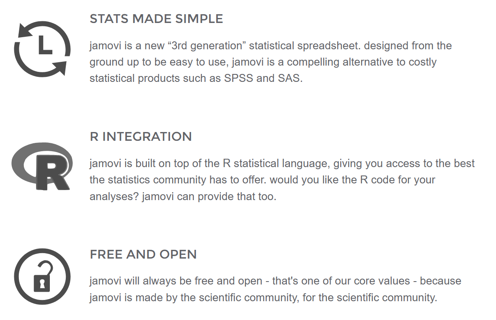

![]()
─ Session info ───────────────────────────────────────────────────────────────
setting value
version R version 4.5.0 (2025-04-11 ucrt)
os Windows 11 x64 (build 26100)
system x86_64, mingw32
ui RTerm
language (EN)
collate German_Germany.utf8
ctype German_Germany.utf8
tz Europe/Berlin
date 2025-07-07
pandoc 3.4 @ C:/Program Files/RStudio/resources/app/bin/quarto/bin/tools/ (via rmarkdown)
quarto NA @ C:\\PROGRA~1\\RStudio\\RESOUR~1\\app\\bin\\quarto\\bin\\quarto.exe
─ Packages ───────────────────────────────────────────────────────────────────
package * version date (UTC) lib source
cachem 1.1.0 2024-05-16 [1] CRAN (R 4.5.0)
cli 3.6.5 2025-04-23 [1] CRAN (R 4.5.0)
devtools * 2.4.5 2022-10-11 [1] CRAN (R 4.5.0)
digest 0.6.37 2024-08-19 [1] CRAN (R 4.5.0)
ellipsis 0.3.2 2021-04-29 [1] CRAN (R 4.5.0)
evaluate 1.0.3 2025-01-10 [1] CRAN (R 4.5.0)
fastmap 1.2.0 2024-05-15 [1] CRAN (R 4.5.0)
fs 1.6.6 2025-04-12 [1] CRAN (R 4.5.0)
glue 1.8.0 2024-09-30 [1] CRAN (R 4.5.0)
htmltools 0.5.8.1 2024-04-04 [1] CRAN (R 4.5.0)
htmlwidgets 1.6.4 2023-12-06 [1] CRAN (R 4.5.0)
httpuv 1.6.16 2025-04-16 [1] CRAN (R 4.5.0)
jsonlite 2.0.0 2025-03-27 [1] CRAN (R 4.5.0)
knitr 1.50 2025-03-16 [1] CRAN (R 4.5.0)
later 1.4.2 2025-04-08 [1] CRAN (R 4.5.0)
lifecycle 1.0.4 2023-11-07 [1] CRAN (R 4.5.0)
magrittr 2.0.3 2022-03-30 [1] CRAN (R 4.5.0)
memoise 2.0.1 2021-11-26 [1] CRAN (R 4.5.0)
mime 0.13 2025-03-17 [1] CRAN (R 4.5.0)
miniUI 0.1.2 2025-04-17 [1] CRAN (R 4.5.0)
pkgbuild 1.4.7 2025-03-24 [1] CRAN (R 4.5.0)
pkgload 1.4.0 2024-06-28 [1] CRAN (R 4.5.0)
profvis 0.4.0 2024-09-20 [1] CRAN (R 4.5.0)
promises 1.3.2 2024-11-28 [1] CRAN (R 4.5.0)
purrr 1.0.4 2025-02-05 [1] CRAN (R 4.5.0)
R6 2.6.1 2025-02-15 [1] CRAN (R 4.5.0)
Rcpp 1.0.14 2025-01-12 [1] CRAN (R 4.5.0)
remotes 2.5.0 2024-03-17 [1] CRAN (R 4.5.0)
rlang 1.1.6 2025-04-11 [1] CRAN (R 4.5.0)
rmarkdown 2.29 2024-11-04 [1] CRAN (R 4.5.0)
rstudioapi 0.17.1 2024-10-22 [1] CRAN (R 4.5.0)
sessioninfo 1.2.3 2025-02-05 [1] CRAN (R 4.5.0)
shiny 1.10.0 2024-12-14 [1] CRAN (R 4.5.0)
urlchecker 1.0.1 2021-11-30 [1] CRAN (R 4.5.0)
usethis * 3.1.0 2024-11-26 [1] CRAN (R 4.5.0)
vctrs 0.6.5 2023-12-01 [1] CRAN (R 4.5.0)
xfun 0.52 2025-04-02 [1] CRAN (R 4.5.0)
xtable 1.8-4 2019-04-21 [1] CRAN (R 4.5.0)
yaml 2.3.10 2024-07-26 [1] CRAN (R 4.5.0)
[1] C:/Users/Graduiertenschule/AppData/Local/R/win-library/4.5
[2] C:/Program Files/R/R-4.5.0/library
* ── Packages attached to the search path.
──────────────────────────────────────────────────────────────────────────────Der Übergang von SPSS zu jamovi
Wer oder was ist jamovi?
The jamovi project was founded to develop a free and open statistical platform which is intuitive to use, and can provide the latest developments in statistical methodology. At the core of the jamovi philosophy, is that scientific software should be “community driven”, where anyone can develop and publish analyses, and make them available to a wide audience.


Wir starten jamovi
jamovi-Dokumentation: https://docs.jamovi.org/
jamovi-Buch https://davidfoxcroft.github.io/lsj-book/

Daten-Beispiel: Afrozensus
Afrozensus: https://afrozensus.de/about/
Zugang zu ausgewählten Daten der Afrozensus-Befragung: https://data.afrozensus.de/


Afrozensus-Daten
https://github.com/PawelKulawiak/jamoviintro/raw/refs/heads/main/afrozensus_data_1.xlsx
Variable: Rassismus_Lehrer_Dozenten
- Nie (0)
- Selten (1)
- Manchmal (2)
- Oft (3)
- Sehr häufig (4)
Variable: Anzahl_Afrika_Eltern (Anzahl Afrikanischer Elternteile)
- 1
- 2
Daten-Import und erste Analyse
Wir replizieren das Balkendiagramm und die Häufigkeitstabelle (Variable: Ich werde von Lehrer:innen/Dozierenden rassistisch beleidigt).
Ablauf:
- Daten-Import
- Erforschung/Exploration
- Werte-Labels anlegen
- Kreisdiagramm (Modul JJStatsPlot installieren)
- Referenzen
- Ergebnisse kommentieren im Text-Editor (Reiter Bearbeiten)
- Ergebnisse löschen
- Ergebnisse exportieren (pdf / html)
- HTML-Ergebnisse mit Word öffnen
- Syntax-Modus
- Jamovi-Projekt abspeichern: jamovi File Format (.omv)